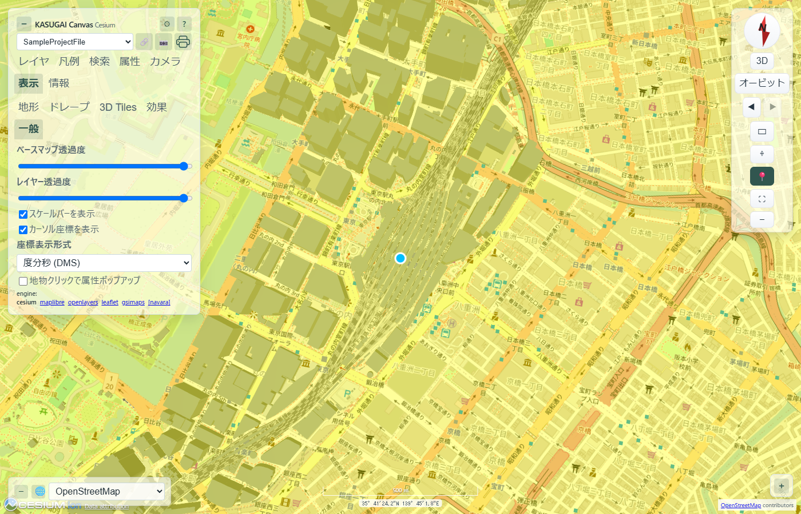
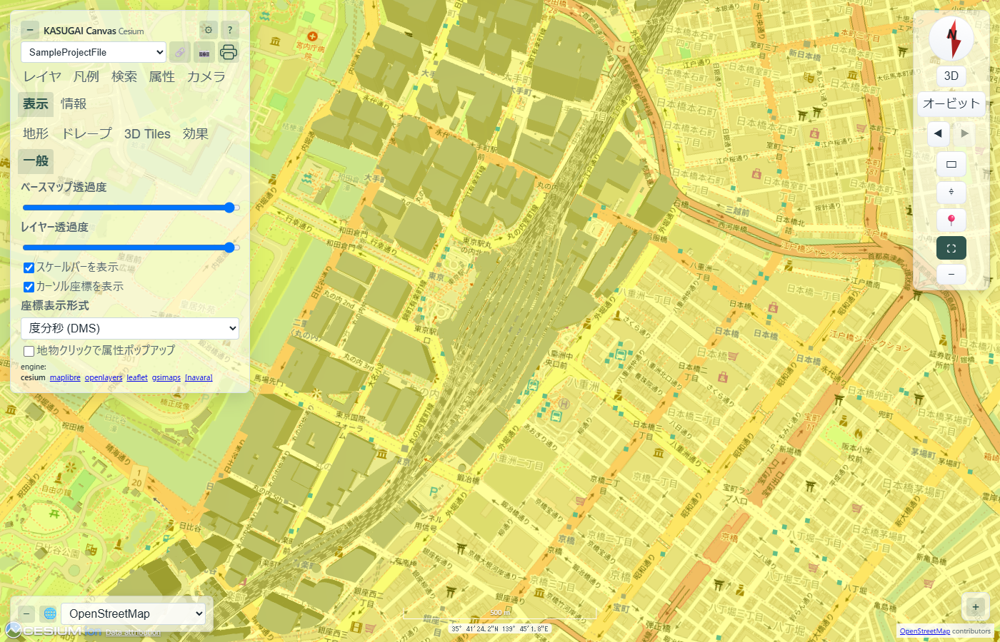

ナビゲーションツールバー（画面右下）の「現在地」「フルスクリーン」「スクリーンショット」ボタンです。
使い方
📍 現在地へ移動
ブラウザの位置情報 API で現在地へ移動し、位置精度に応じて適切な高度を選択します。現在地マーカーを表示し、移動後に再クリックで追従モードを切り替えられます。
⛶ フルスクリーン
トグルで全画面表示と切り替えます。プレゼンや資料投影に便利です。
📷 スクリーンショット
プロジェクトセレクタ横の 📷 ボタンで、表示中の地図を PNG 保存します（ファイル名は kasugai_canvas_YYYY-MM-DD-HH-MM-SS.png）。


設定方法
このツールは .kasc の設定行を持ちません（UI 操作のみです）。関連するレイヤー設定は 6-2 インスペクター を参照してください。